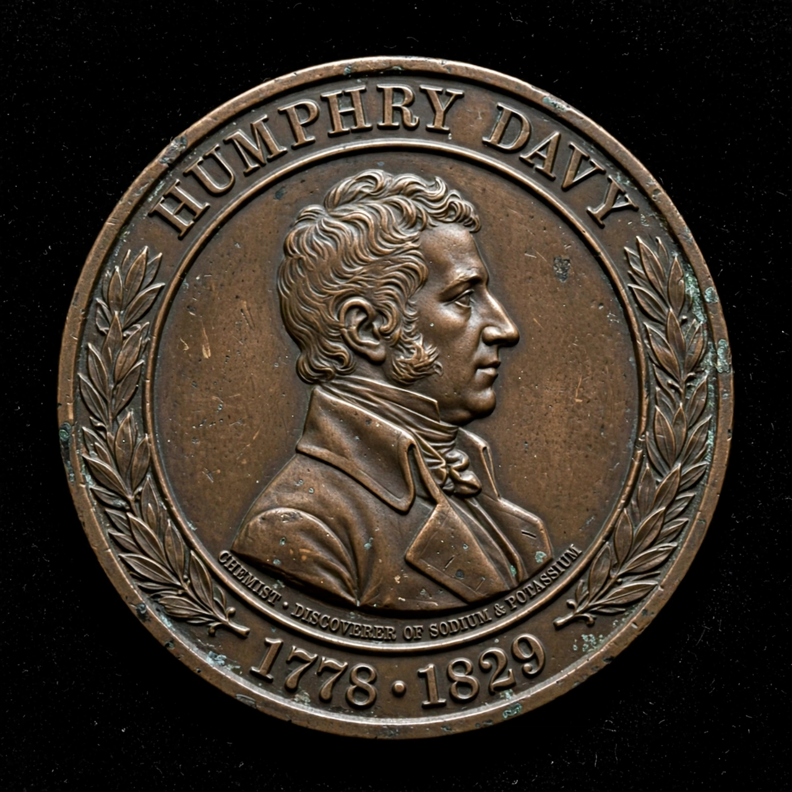

From Wikipedia, the free encyclopedia
| Davy Medal | |
|---|---|
| Awarded for | Outstandingly important recent discovery in any branch of chemistry |
| Presented by | Royal Society |
| First awarded | 1877 |
| Named after | Humphry Davy |
The Davy Medal is awarded by the Royal Society of London "for an outstandingly important recent discovery in any branch of chemistry". Named after Humphry Davy, the medal is awarded with a monetary gift. The medal was first awarded in 1877 to Robert Bunsen and Gustav Kirchhoff "for their researches & discoveries in spectrum analysis", and has since been awarded more than 140 times.

John Davy bequeathed a sum to the Royal Society to fund the medal in memory of his brother Humphry. The first medal was made of gold; it is now bronze. The award is made annually (with occasional exceptions), and unlike some other Royal Society medals it has repeatedly gone to overseas chemists.
See also: Royal Society, Humphry Davy, Copley Medal.